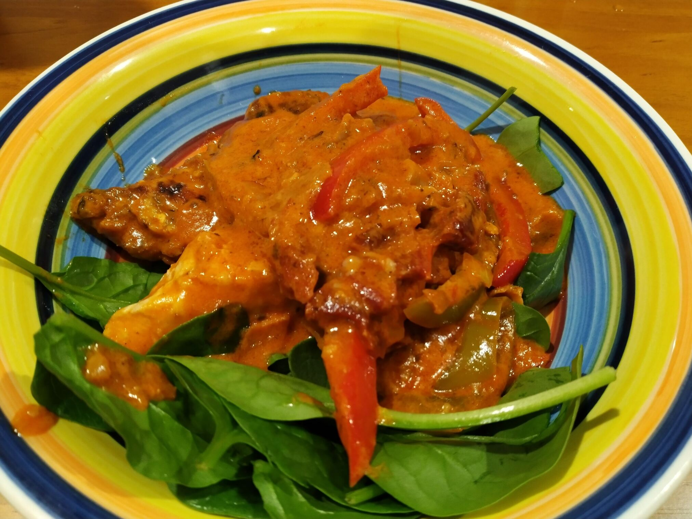

Mediterranean Chicken in Creamy Tomato Sauce
 Meat
Meat

- 4 chicken breasts with fat trimmed
- 2 eggs
- plain flour
- salt
- pepper
- dried oregano
- dired thyme
- paprika
- olive oil
- brown onion, diced
- 3 cloves garlic, minced
- 1 cup sundried tomatoes
- half red capscium, sliced
- half green capsicum, sliced
- tub of tomato puree
- 1/3 cup wine (90mL)
- 1 cup of veggie stock
- 1/3 cup thickened cream
- parmesan and mozzorella cheese
- spinach to serve
Preheat oven to 160 degrees
To coat chicken, whisk an egg in a shalllow bowl
Place flour, oregano, papkrika, salt and pepper on plate
Dip the chicken in the egg and then roll in flour mixture
Transfer to fry pan with olive oil and brown
Place in oven for a futher 10 mins to fully cook the chicken
To make sauce heat olive oil and cook onion for 3-4 mins until soft
Add garlic, oregano, paparika, sun dried tomatoes, capscium and tomato puree, cook for 2 mins
Add wine and allow to bubble for 2 mins
Add chicken stock, bring to the boil and then allow to simmer for 5 mins
Stir in cream and cheese
Check chicken is fully cooked and then add to sauce.
Serve with fresh spinach, roast vegetables or pasta